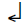

Eve dönmek için acelem yoktu. Sabah çıkarken belki geç dönerim diye Uskumru’ya iki öğüne yetecek kadar kedi bisküvisi bırakmıştım. Gecikmem hoşuna gitmeyecekti, ama hiç olmazsa açlıktan ölmezdi. Evime bir an önce dönmem için alçak duvardan atlamama gerek yoktu, ayrıca hâlâ bunu başaracak gücüm kalmış mıydı, bilmiyordum. Noboru Vataya’yla konuşmak beni bitkin düşürmüştü. Bedenim tonlarca ağırlıktaydı ve düşünmekte zorlanıyordum. Neden bu herif beni hep bu derece yoruyordu acaba? Tek bir isteğim vardı: uzanıp uyumak. Sahi, neden sanki, eve dönmeden burada kısa bir uyku çekmiyordum ki? Dolaptan battaniye ile yastık aldım, “prova salonu”ndaki kanepeye yerleştim, gerindim; lambayı söndürüp Uskumru’yu düşünerek kapadım gözlerimi. Öyle uzaklardan dönüp gelmişti ki bana. Dönüp gelmek için gerekeni yapmıştı. Bir tür nimetti bu. Gözlerim kapalı, arka ayaklarındaki yumakların yumuşacık temasını, üçgen biçimindeki soğuk kulaklarını, pembecik dilini düşündüm. Uskumru, bilincimin ta dibinde de, sakin sakin kıvrılıp dertop olmuş, uyuyordu; avuçlarımda tüylerinin sıcaklığını duyuyor, düzenli hırıltısını işitiyordum. Sinirlerimin ayakta olmasına karşın, sonunda ben de uyumuşum.
Gecenin ortasında uyandım. Kızak çıngırakları duyuyormuşum gibi geldi. Noel manzarasına bir fon müziği.
Kızak çıngırakları ha?
Alçak masanın üzerindeki kol saatimi el yordamıyla aradım: fosforlu ibreler, bir buçuğu gösteriyordu. Sandığımdan da daha uzun süre uyumuştum. Kulak kabarttım. Yüreğimin, içimde bir yerlerde küçük ve sert darbelerle vurduğunu işitiyordum. Yanılmış ve rüyamda duymuş olmalıydım o sesi. İçimi rahatlatmak için evi dolaşmaya karar verdim. Pantolonumu giydim, sessiz adımlarla mutfağa gittim. Gürültü yeniden başlamıştı, prova salonundan çıkınca, daha iyi duyuluyordu şimdi. Gerçekten de kızak çıngırakları sanılırdı ve Tarçın’ın çalışma odasından geliyor gibiydi. Bir an kapının önünde durup dinledim, sonra kapıya vurdum. Belki de ben uyurken Tarçın dönüp gelmişti. Yanıt yok. Kapıyı aralayıp içeriye bir göz attım. Karanlıkta, boyumun hizasında, beyazımtırak bir ışık yüzüyor, bir dörtgen çiziyordu: bilgisayarın ekranı. Çıngırak sesi sandığım şey, durmadan yinelenen sesli bir işaretti, bilmediğim yeni bir sinyaldi: bilgisayar açılmış, beni çağırıyordu. Gizemli bir gücün etkisindeymiş gibi, ekranın karşısına oturdum ve görünen mesajı okudum:
“Zemberekkuşu’nun Güncesi” programına girdiniz. 1’den 16’ya kadar numaralanmış belgelerden birini açmak için bir numara seçiniz.” 
Birisi bu programı açmıştı. Oysa ki konakta benden başka kimse yoktu. Yoksa biri dışarıdan mı açmıştı bilgisayarı? O halde, Tarçın’dan başkası olamazdı.
Zemberekkuşu’nun Güncesi? Kızak çıngırağı sesine benzeyen sesli sinyal aralıksız sürüyordu. Sanki Noel sabahındaydık. Bilgisayar, ille de bir belgeyi seçmem için üsteliyordu. Biraz duraksadıktan sonra, rasgele, 8 tuşuna bastım. Sesli sinyal hemen sustu ve ekranda bir metin geçmeye başladı, yazılı bir ruloyu açıvermiş gibi.